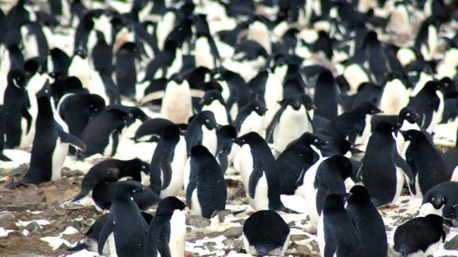
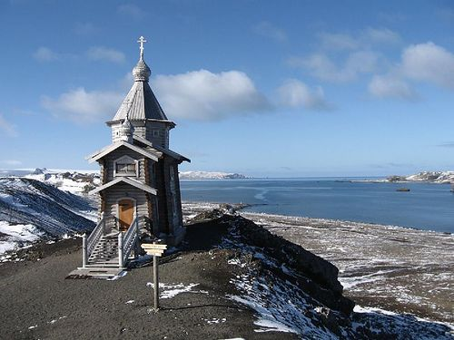
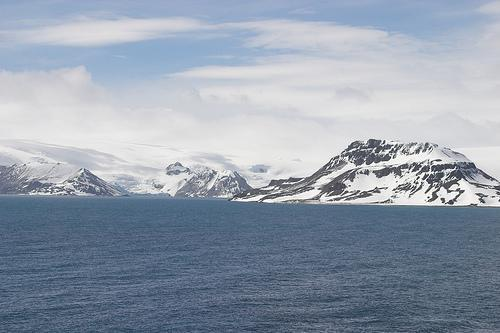

Isla Rey George
La isla Rey Jorge, conocida en Argentina como isla 25 de Mayo y en Rusia como isla Waterloo, es la mayor de las islas Shetland del Sur en la Antártida. El angosto estrecho Fildes la separa de la isla Nelson, al suroeste. Cuenta con 3 grandes bahías: bahía Fildes, bahía Almirantazgo y bahía Rey Jorge.

Dominique: En el extremo oeste de la isla se encuentra la península Fildes, donde se emplazan las bases Gran Muralla, Escudero y Frei, Bellingshausen y Artigas. Más del 90% de la superficie es hielo. Mide 95 km de largo por 25 de ancho y su altura máxima alcanza los 705 m.
La isla Pingüino o Penguin, también llamada isla Georges, es una isla de la Antártida de 1,4 km ancho por 1,7 km de largo, la cual se ubica a 62°06′S 57°52′O y cierra la costa sur de la isla Rey Jorge y marca el lado este de la entrada a la bahía Rey Jorge en las islas Shetland del Sur.
Tern Nunatak, traducción del inglés-Tern Nunatak es un nunatak que se encuentra al este de Lussich Cove, Admiralty Bay, en la Isla Rey Jorge en las Islas Shetland del Sur. Cartografiado pero no nombrado por la Expedición Antártica Francesa, 1908–10, bajo Charcot.
La iglesia de la Santísima Trinidad es una pequeña iglesia ruso-ortodoxa en la isla Rey Jorge próxima a la base rusa Bellingshausen en la Antártida.
La península Fildes se encuentra en el extremo sudoeste de la isla Rey Jorge o 25 de Mayo en el archipiélago de las Shetland del Sur en la Antártida. El área en donde se encuentra la península tiene la mayor concentración de instalaciones científicas o bases de la Antártida.
La bahía Almirantazgo o bahía Lasserre es una bahía irregular de 8 km de ancho en su entrada, entre punta Demay y Martins Head, que se interna en la costa sur de la isla Rey Jorge o isla 25 de Mayo por 16 km, isla perteneciente a las islas Shetland del Sur en la Antártida.
